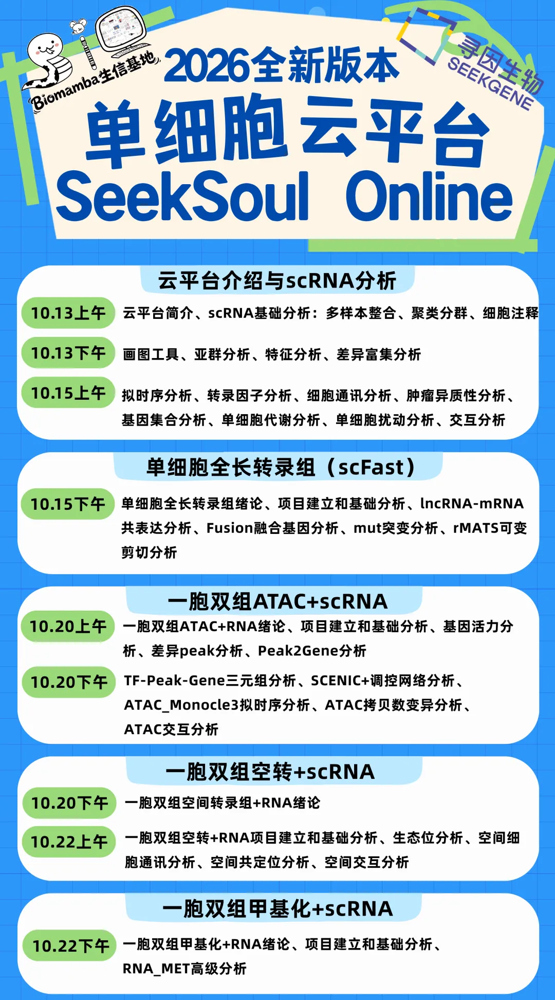
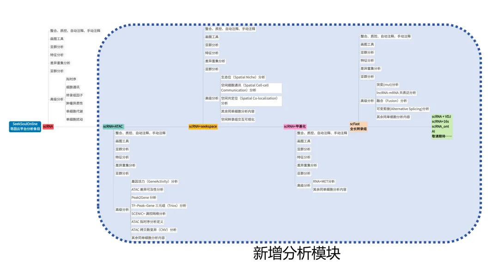
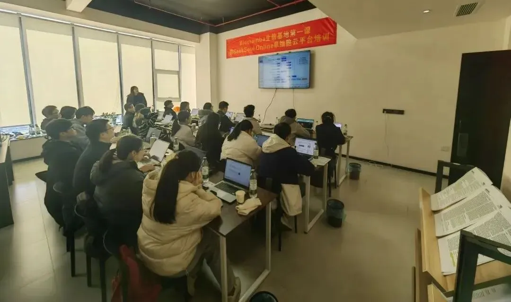
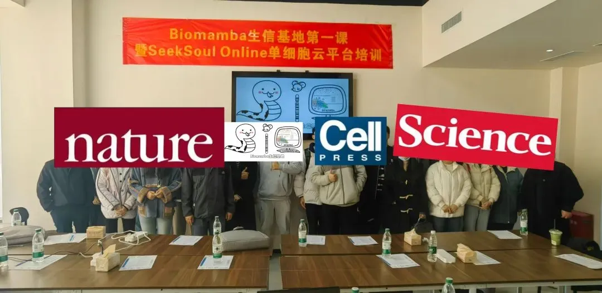
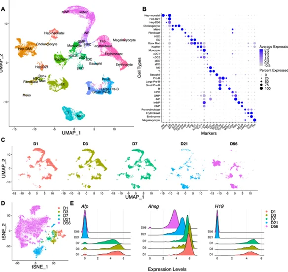
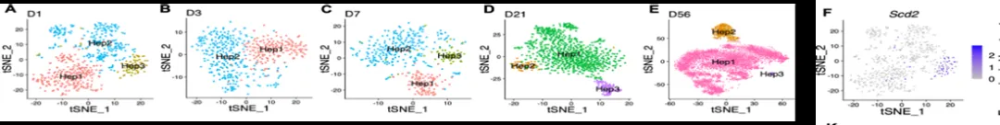

2026全新版本：单细胞云平台SeekSoul Online公开课
原文：https://mp.weixin.qq.com/s?__biz=MzAwMzIzOTk5OQ==&mid=2247542671&idx=1&sn=939cec8498b928f844add85dd21d2bae&chksm=9b3c5edfac4bd7c951818214bf3864610aeb21910ce85ea1d6e52fb5ca83ce48a6cabeae4ce1#rd 合集：单细胞云平台
2026全新版本：单细胞云平台SeekSoul Online
从2024年的1.5天学会单细胞分析到2025年的听说你想两天学会单细胞分析？，这一路走来，感谢每一位同学的陪伴与认可，单细胞云平台课程视频在B站的播放量已经达到了1.8w+，收到了大量的好评，感谢大家的支持。另外这三年间SeekSoul Online单细胞云平台的功能在不断的迭代和更新。今天，我们带着2026全新版本的内容回归啦~🎉
花费短短四天内学会scRNA-seq代码，从小白到大神是不太可能的，我们的代码教程一直持续了两个月咧。不过忽略编程的学习成本(听到最多的吐槽就是，我要上门诊/做实验，哪有时间学编程)，在拥有单细胞背景知识的情况下，花四天时间掌握云平台后，还是能够获得很多单细胞分析能力的。所以，这次就带大家一起学习《Nature Nanotechnol》都在用的零代码云平台，全新课表如下：

SeekSoul® Online单细胞云平台，注册链接：[https://seeksoul.online/t_static/Biomamba/Biomamba.html]，注册即免费获得一个月分析权限。
报名方式：联系客服微信[Biomamba_zhushou]

报名费用：免费免费免费！
课程时间：10月13日、15日、20日、22日
你需要准备：一台能打开浏览器、能上网的电脑
参与方式：线上线下同步开展，联系客服微信获取生信基地线下地址~
直播预约：
视频号
B站
课程资料下载：https://pan.baidu.com/s/1W0WRNaqQGZcL6lykds0nEg?pwd=2kee
SeekSoul Online课程主要内容

一、云平台介绍与scRNA分析
1.1 云平台简介
1.2 scRNA基础分析：多样本整合、聚类分群、细胞注释
1.3 画图工具、亚群分析、特征分析、差异富集分析
1.4 高级分析：拟时序分析、转录因子分析、细胞通讯分析、肿瘤异质性分析、基因集合分析、单细胞代谢分析、单细胞扰动分析、交互分析
二、单细胞全长转录组（scFast）
2.1 绪论
2.2 项目建立和基础分析
2.3 高级分析：lncRNA-mRNA共表达分析、Fusion融合基因分析、mut突变分析、rMATS可变剪切分析
三、一胞双组ATAC+scRNA
3.1 绪论
3.2 项目建立和基础分析
3.3 高级分析：基因活力分析、差异peak分析、Peak2Gene分析、TF-Peak-Gene三元组分析、SCENIC+调控网络分析、ATAC_Monocle3拟时序分析、ATAC拷贝数变异分析、ATAC交互分析
四、一胞双组空转+scRNA
4.1 绪论
4.2 项目建立和基础分析
4.3 高级分析：生态位分析、空间细胞通讯分析、空间共定位分析、空间交互分析
更多scRNA+VDJ、scRNA+16s、scRNA_ont、AI.......
持续更新中，敬请期待~欢迎入群潜水
更多SeekSoul Online课程
一、基础分析
二、文章复现
零代码复现《Genome Medicine》|scRNA-seq解析CXCL16/CXCR6驱动驻留T细胞促进突触消除
** **
三、scATAC
持续更新中，敬请期待~
往期SeekSoul 单细胞分析特训班

上课ing
课后合影
课后作业
作业1：
文章标题：Single cell analysis in head and neck cancer reveals potential immune evasion mechanisms during early metastasis
文章中文标题：对头颈部癌症的单细胞分析揭示了早期转移过程中潜在的免疫逃逸机制。
文章链接：https://www.nature.com/articles/s41467-023-37379-y
发表期刊：Nature Communications
样本名称：
(1)如下图的文章展示 进行大群注释、组间umap图、各细胞类型marker基因小提琴图展示、细胞类型占比分布

(2)对肿瘤细胞（就是上皮细胞，拷贝数变异已确定）完成细胞亚群分析（图a），
对个样本上皮细胞EMT基因集打分（图b）；对HN251、HN279样本的肿瘤细胞进行组间拟时序分析（图c、d）

** **
作业2：
文章标题：Temporal Analyses of Postnatal Liver Development and Maturation by Single Cell Transcriptomics
文章中文标题：单细胞转录组学对出生后肝脏发育和成熟的时间分析
文章链接：https://pmc.ncbi.nlm.nih.gov/articles/PMC8842999/
发表期刊：Developmental Cell
① 如下图的展示 进行大群聚类注释（图A）、各细胞类型marker基因气泡图（图b）按照样本分组展示umap降维图（图c），展示组间的tsne图（图d）、以小提琴图展示各样本三个基因表达，代替山脊图

②对肝细胞进行亚群分析，展示各样本的umap降维图、和scd2基因的featureplot图

③对不同发育的肝细胞进行拟时序分析，得到如下图类似结果


欢迎交流

 留一个领取资料、开箱即用的单细胞分析镜像的助手[Biomamba_zhushou]，方便各位随时交流。同时我们也构建了交流群矩阵，欢迎大家一起讨论。
留一个领取资料、开箱即用的单细胞分析镜像的助手[Biomamba_zhushou]，方便各位随时交流。同时我们也构建了交流群矩阵，欢迎大家一起讨论。
 您点的每个赞和在看，我都认真当成了喜欢
您点的每个赞和在看，我都认真当成了喜欢